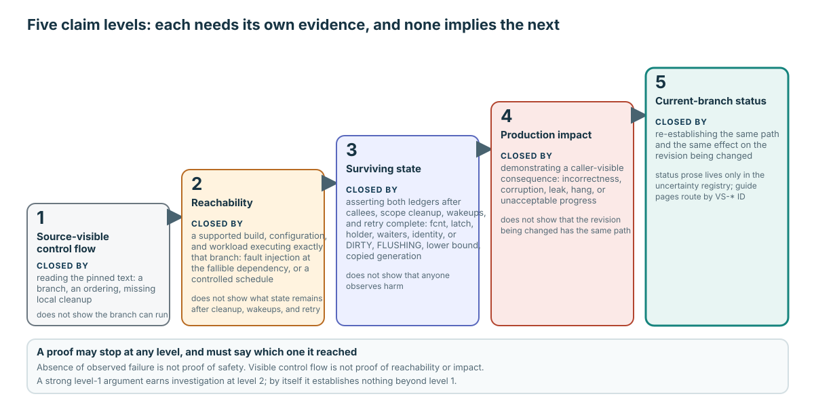

다섯 단계의 주장에는 서로 다른 evidence가 필요하다

- Source-visible control flow: pinned text에서 의심스러운 ordering이나 exit가 보인다.
- Reachability: 지원되는 target에서 바로 그 branch가 실행된다.
- Surviving state: callee cleanup, scope cleanup, wakeup, retry 뒤에도 debt가 남는다.
- Production impact: consumer가 incorrectness, leak, hang, corruption, 허용하기 어려운 progress를 관찰한다.
- Current-branch status: 변경 대상 revision에서도 같은 path와 effect를 다시 확인한다.
Proof는 어느 level에서든 멈출 수 있다. Conclusion도 반드시 그 지점에서 멈춰야 한다.
즉시 반환된 state가 최종 state는 아닐 수 있다
실패할 수 있는 callee가 자신의 resource를 cleanup할 수 있다. Scope guard나 outer caller가 mutex를 release하거나 load record를 제거하고, flag를 복원하거나 waiter를 깨우며, error를 retry로 바꿀 수도 있다. 따라서 두 지점에서 state를 기록한다.
- 정확한 return seam에서 branch와 local ordering을 입증한다.
- 전체 owner protocol이 끝난 뒤 무엇이 남는지, retry가 progress할 수 있는지 입증한다.
Failure path에서도 ownership accounting을 보존합니다
| State | Unwind 후 검증할 postcondition |
|---|---|
Global fcnt | Success 또는 retry ownership으로 설명되지 않는 grant가 남지 않는다. |
| Latch tuple | Mode, count, waiter bit가 반환 contract와 일치한다. |
| Per-thread holder | Debt는 시도 횟수가 아니라 성공한 acquisition 수를 센다. |
| Wait request | 정확히 한 번 remove, grant, wake되며 queue node가 stranded되지 않는다. |
| Resident identity | Hash mapping, VPID, provisional BCB, load owner가 일치한다. |
| Retry | 뒤이은 fix가 duplicate identity나 debt 없이 locate/load/acquire할 수 있다. |
VS-10은 dwb_read_page() error 뒤의 cold-load ledger가 필요하다. VS-11은 grant와 unwind seam이 서로 다르므로 normal hit, lock-free hit, 깨어난 waiter를 따로 확인해야 한다.
Level 1 source route: VS-10은 page_buffer.c:8510–8515, 실패할 수 있는 holder allocation은 6000–6055이며 각 grant site를 별도로 추적한다.
Failure 뒤에도 propagation debt가 retry 가능해야 한다
| State | Unwind 후 검증할 postcondition |
|---|---|
| DIRTY / FLUSHING | Capture된 G는 retry 가능하고 concurrent G+1은 독립적으로 dirty 상태를 유지한다. |
| Oldest-unflush lower bound | 저장된 WAL floor가 복원되거나 올바른 generation으로 transfer된다. |
| Copied G | Copy buffer와 DWB-slot ownership을 정확히 한 번 discharge한다. |
| Flush waiter | Wake되거나 명시적 retry path가 계속 소유한다. |
| TDE / DWB / I/O resource | 실패할 수 있는 각 resource에는 cleanup owner가 하나 있다. |
| Retry | 뒤이은 flush, checkpoint, victim 작업이 byte나 WAL floor를 잃지 않고 progress한다. |
VS-12에는 TDE-copy와 DWB-slot injection이 각각 필요하다. Concurrent post-copy re-dirty도 별도 schedule로 검증해야 한다. Single-thread failure로는 G+1을 다룰 수 없다.
Level 1 source route: generation setup과 early return은 page_buffer.c:10795–10828, 일반적인 이후 rollback은 10908–10923.
주장하는 harm을 실제로 만들 수 있는 boundary를 통과한다
| Claim | 최소한 필요한 seam | 약한 대체물 |
|---|---|---|
| Allocator/read/crypto/write unwind | 실제 owner path 안의 정확한 dependency를 inject하고 post-state를 검증한다. | Leaf function만 mocking하기. |
| Waiter/promotion/load/identity race | 경쟁 transition의 controlled schedule과 memory-order 논증. | Failure를 보지 못한 unscheduled stress. |
| Victim progress | 실제 candidate, rejection, 최종 victim을 관찰하는 pressure. | Pressure 없는 pool에서 allocation 성공만 보기. |
| Durable recovery consequence | 명시한 WAL, DWB, home-page boundary에서 crash 후 recover. | Crash 없이 성공한 flush return. |
Experiment의 evidence boundary를 기록합니다
- 정확한 source revision, build mode, configuration, owner path.
- Injection 또는 schedule과 target branch가 실행되었다는 증거.
- 전체 unwind가 끝난 뒤 before/after ledger 값.
- Retry, waiter, liveness, victim, checkpoint, restart consequence.
- 뒷받침되는 conclusion과 명시적으로 뒷받침되지 않는 conclusion.
- Reproducer receipt와 current registry ID. Status는 registry에서만 갱신한다.
VS-13은 error-visibility 질문이고 VS-14는 controlled identity/reuse와 memory-order proof obligation이다. 모든 uncertainty에 같은 fault-injection 형태를 억지로 적용하지 않는다.
약한 “stress 통과” 결론을 강화한다
문제
Maintainer가 “Stress test를 10,000번 돌렸는데 failure가 없었으니 exceptional path는 안전하다”고 말한다. VS-10, VS-11, VS-12 중 하나를 고르세요.
할 일: stress run이 입증하지 못한 것을 설명하고, 필요한 정확한 injection seam, post-unwind ledger, retry/liveness check, impact test, current-branch revalidation을 제시하라.
답안을 chat에 붙여 넣으세요. Probe가 실제 state owner까지 도달하는지, conclusion이 얻은 evidence 범위에서 멈추는지 확인하겠습니다.
Status는 registry에서, proof는 owner path에서 찾는다
Failure Unwind and Open Proof Obligations와 uncertainty registry를 함께 읽으세요. ID 하나를 고르고 Canonical mechanism을 따라간 뒤 injection을 설계하기 전에 before/after ledger를 작성합니다.